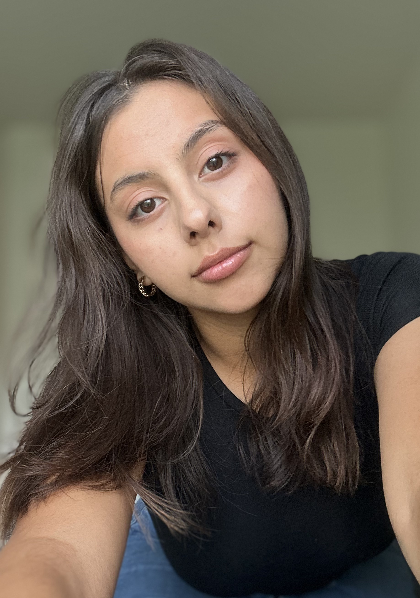

An Artist's Eye and A Designer's Curiosity

Hello, I'm Abigail Arevalo!
I'm an designer with a background in fine art and a growing passion for graphic design and digital media. As a Graphic Information Technology student at Arizona State University, I'm exploring how my artistic perspective can translate into new forms of visual communication. I enjoy experimenting with color, composition, and texture when possible. I use each project as an opportunity to learn and create, and welcome new skills.
History
I started getting into art in 2022 and gradually found myself drawn to experimenting with different mediums, textures, and ways of expressing myself. I’ve always enjoyed the process of creating and seeing where my ideas take me. Eventually, I became interested in how I could take that same creativity beyond traditional art and apply it to digital design. That curiosity led me to study Graphic Information Technology at ASU, where I’m learning new ways to bring my ideas to life and continue growing as a creative.
Goals
My goal is to continue expanding my knowledge of design and digital media as I work toward completing my degree. I hope to pursue a master's degree in the future and explore how design can create more meaningful and accessible experiences for people. I'm especially interested in UX/UI design because it combines creativity, problem-solving, and an understanding of how people interact with technology. As I continue learning and developing my skills, I want to find a career where I can bring my artistic perspective into digital spaces while continuing to grow as a designer.